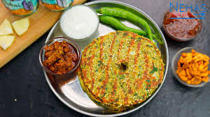

Thalipeeth is a traditional Maharashtrian multi-grain flatbread, known for its earthy flavor and nutritional richness. It's made by mixing various flours, such as rice flour, chickpea flour (besan), and wheat flour, along with spices and herbs. Thalipeeth is a healthy option for breakfast or dinner and can be served with yogurt, chutney, or pickle. The dough is spiced with cumin, coriander, and turmeric, making it not just tasty but also healthy.
What makes Thalipeeth unique is its use of **"bhajani"** flour, a blend of roasted grains like rice, wheat, and pulses, ground together. This flour is not only packed with nutrients but also gives Thalipeeth its distinctive texture and flavor. The dough is typically shaped into a round, flat disc and cooked on a griddle with a little oil until crispy and golden brown. The crispiness and the soft, flavorful interior make it a perfect dish for any time of the day.
Thalipeeth is a wholesome meal that provides proteins, fiber, and a variety of essential nutrients. Its versatility also allows for many variations, where additional ingredients like vegetables (carrot, spinach) or herbs (fenugreek leaves) can be added to suit one's preferences. It is an excellent choice for people looking for gluten-free options, as it can be made with rice flour and other gluten-free flours.
Thalipeeth Recipe
Ingredients
For the Dough:
- 1 cup thalipeeth bhajani flour (a mixture of rice, wheat, and pulses flour)
- 1/4 cup chickpea flour (besan)
- 1/4 cup wheat flour
- 1 small onion (finely chopped)
- 1-2 green chilies (finely chopped)
- 1 tbsp coriander leaves (finely chopped)
- 1 tsp cumin seeds
- 1/2 tsp turmeric powder
- 1/2 tsp chili powder
- Salt to taste
- Water (as needed to form a soft dough)
- Oil or ghee for cooking
Instructions
Step 1: Prepare the Dough
- In a large bowl, combine thalipeeth flour, chickpea flour, wheat flour, cumin seeds, turmeric, chili powder, salt, chopped onions, green chilies, and coriander leaves.
- Gradually add water and knead the mixture into a smooth, soft dough. Ensure the dough is not too sticky; it should be firm enough to handle.
- If the dough is too dry, add a little more water, or if it’s too sticky, add a little more flour.
Step 2: Shape the Thalipeeth
- Take a small portion of the dough and roll it into a ball.
- Place the dough ball between two pieces of parchment paper or on a damp cloth and roll it out into a flat, round disc, about 6 inches in diameter.
- Make a small hole in the center of the disc with your finger (this helps in even cooking).
Step 3: Cook the Thalipeeth
- Heat a tawa or griddle on medium heat. Once hot, place the rolled-out thalipeeth on the tawa.
- Cook for 2-3 minutes on one side until it begins to brown. Flip it over and cook the other side for 2-3 minutes.
- Brush some oil or ghee on both sides and cook until golden brown and crispy on both sides.
Step 4: Serve
- Remove the thalipeeth from the tawa and place it on a serving plate.
- Serve hot with yogurt, pickle, or green chutney for added flavor.
Serving Suggestions
Thalipeeth is best enjoyed hot and crispy. It can be served with a variety of dips like yogurt, tangy tamarind chutney, or a spicy green chutney. For a more filling meal, you can pair it with a vegetable curry or salad.